中文
中文ngscopeclient × Sipeed SLogic 上手指南
让 Sipeed SLogic 系列逻辑分析仪在 ngscopeclient 上跑起来——从下载到看见第一条波形
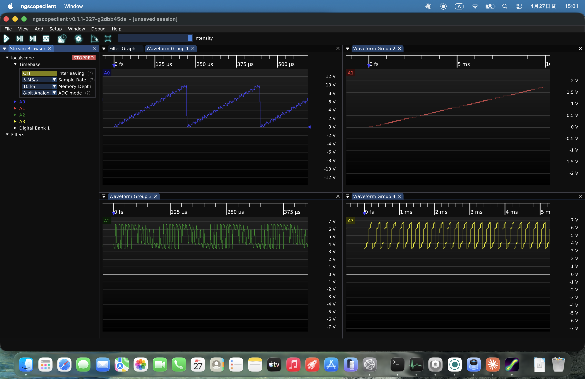
这是什么
Sipeed SLogic 是一系列高性价比 USB 逻辑分析仪硬件。本项目把它接到了 ngscopeclient——一个开源、跨平台、基于 GPU 加速的示波器/分析仪 GUI——上面，让你能用 ngscopeclient 强大的波形显示、协议解码、自动化测试能力来操作 SLogic 硬件。
整个方案分两半：
- GUI 端：
ngscopeclient——展示波形、配触发、跑解码协议的图形界面。 - 桥接端：
sigrok-bridge——一个本地后台小程序，把硬件接进来。
两者通过 TCP 网络连起来，所以你也可以把硬件插在另一台机器（比如机房的 Linux 机或树莓派）上远程使用。
| 你需要知道的 | 说明 |
|---|---|
| 支持的硬件 | SLogic Combo 8SLogic 16U3（当前主力）SLogic 32U3（即将推出，本项目的重点支持型号）其它厂商型号暂未在分发版本中加入 |
| 支持的系统 | Windows 10/11 x64、Linux x86_64；macOS 即将推出 |
| 你需要装的东西 | 一个 zip / AppImage + 一个独立的 sigrok-bridge 可执行文件——没有任何系统级安装，纯绿色便携版本，随插随用 |
| 独门特性 | 除了常规数字逻辑分析，还可以用 --adc-mode analog 把对应硬件管脚的采样作为 8-bit 模拟信号上传——同一台 SLogic 既能当 LA 也能当采样示波器(需搭配 ADC 套件) |
📷 系列产品展示
下载
发行包目录：https://dl.sipeed.com/shareURL/SLogic/ngscopeclient
| 平台 | 下载内容 |
|---|---|
| Windows x64 | ngscopeclient-<版本>-win64.zip + sigrok-bridge.exe |
| Linux x86_64 | ngscopeclient-<版本>-x86_64.AppImage + sigrok-bridge（独立 ELF 单文件） |
| macOS | 即将推出 |
须知
sigrok-bridge是单个可执行文件，零依赖、不需安装，放到任意目录皆可。
第一次跑起来
Windows
步骤 1：解压 ngscopeclient-*-win64.zip 到任意目录（保持目录结构），把 sigrok-bridge.exe 也丢进去（同一目录或别的目录都行）。
步骤 2：插上 SLogic 硬件——无需安装任何驱动。SLogic 默认就是 WinUSB 设备，Windows 即插即用。
步骤 3：先打开一个 PowerShell 或 cmd 窗口运行 sigrok-bridge.exe：
.\sigrok-bridge.exe
它会打印一行启动日志并等待客户端连接——不要关掉。然后双击 ngscopeclient.exe 启动 GUI。
📷 Windows 使用示意图
📷 Windows 使用示意图：左下角一个命令行窗口显示
sigrok-bridge.exe的启动日志（"Sigrok bridge server starting: driver=sipeed-slogic-analyzer, port=10101..."），底部 ngscopeclient 主界面已打开。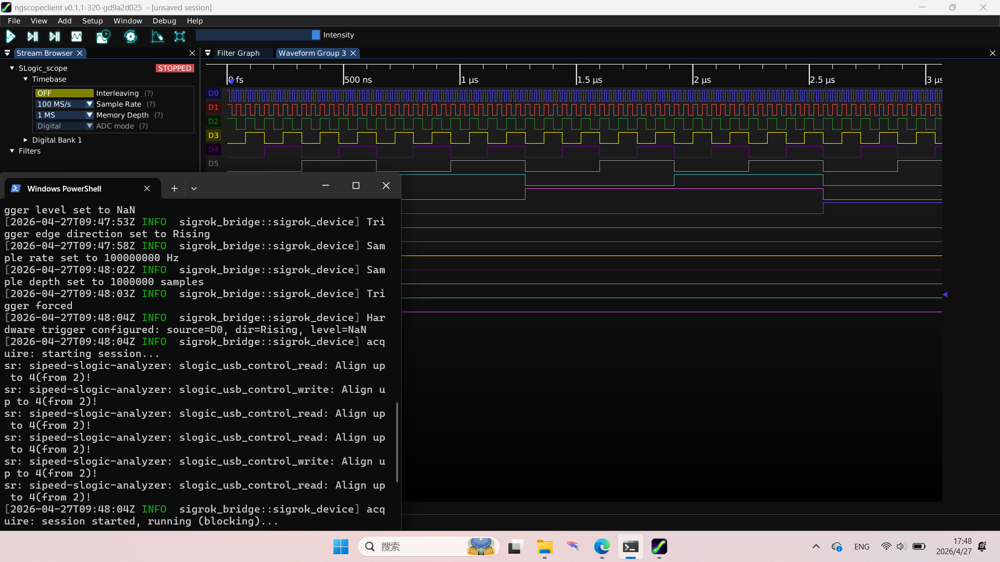
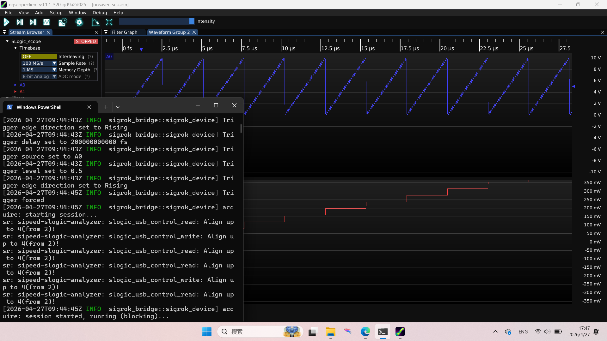
系统要求：Windows 10 1903 或更新（自带 UCRT 运行时）。不需要装 Visual C++ Redistributable。
Linux
步骤 1：给两个文件加可执行权限
chmod +x ngscopeclient-*-x86_64.AppImage sigrok-bridge
步骤 2：装 udev 规则，让普通用户能访问 SLogic（只需做一次）
sudo cp 60-sigrok-slogic.rules /etc/udev/rules.d/
sudo udevadm control --reload && sudo udevadm trigger
规则文件内容如下。
装完之后拔插一次 SLogic 让规则生效。
SUBSYSTEM!="usb|usb_device", GOTO="sipeed_rules_end"
ACTION!="add", GOTO="sipeed_rules_end"
ATTRS{idVendor}=="359f", MODE="0666", GROUP="uucp", TAG+="uaccess"
ENV{ID_MM_DEVICE_IGNORE}="1"
LABEL="sipeed_rules_end"
步骤 3：分两个终端跑
# 终端 1：启动 bridge
./sigrok-bridge
# 终端 2：启动 GUI
./ngscopeclient-*-x86_64.AppImage
📷 Linux 使用示意图
📷 Linux 使用示意图：两个并排的终端窗口，下边 bridge 的启动日志，上边 ngscopeclient AppImage 启动的过程。
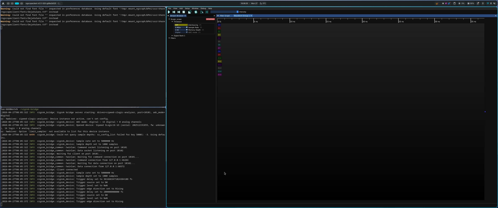
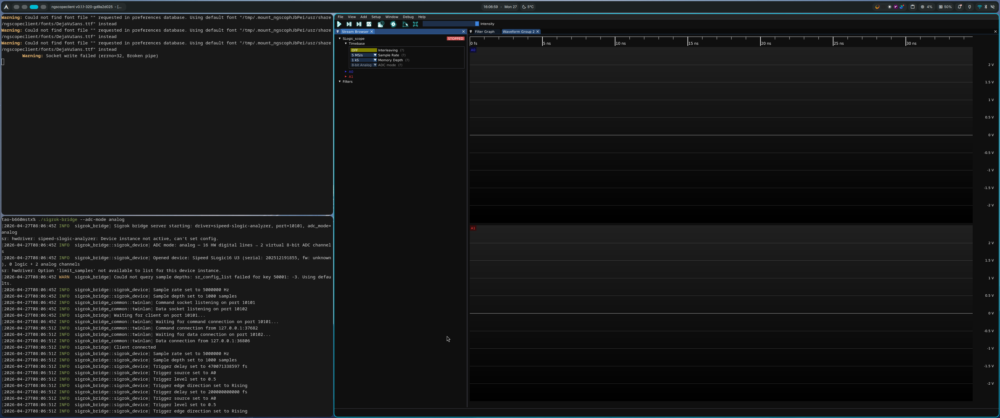
macOS
即将推出。敬请关注下载目录的更新，或通过 §7 邮件渠道询问最新进展。
在 ngscopeclient 中连接
进入 ngscopeclient 主界面后，菜单 File → Add → Oscilloscope 打开 Add Instrument 对话框，填：
| 字段 | 值 |
|---|---|
| Driver | sigrok |
| Transport | twinlan |
| Path | localhost:10101（本机使用）或 <远程IP>:10101（硬件在别的机器上时） |
点 Connect。如果一切正常，会看到通道面板里出现对应数量的通道（SLogic Combo 16 路；SLogic32U3 32 路）。
📷 连接步骤图
📷 连接步骤图：ngscopeclient 的 Add Instrument 对话框，正确填好三个字段。本次截图是模拟模式。
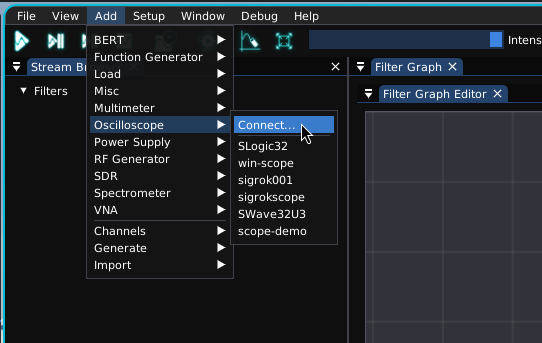
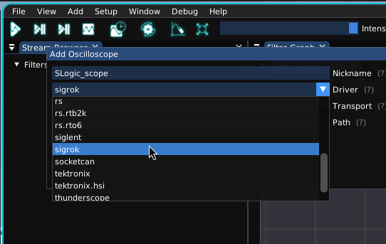
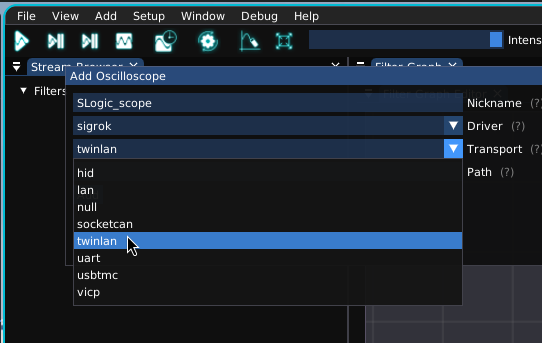
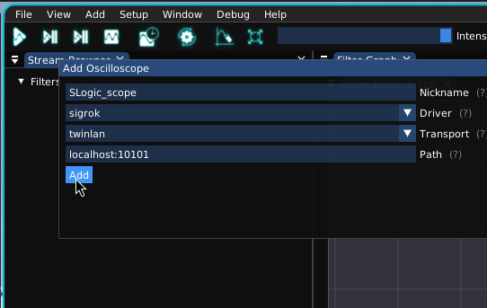
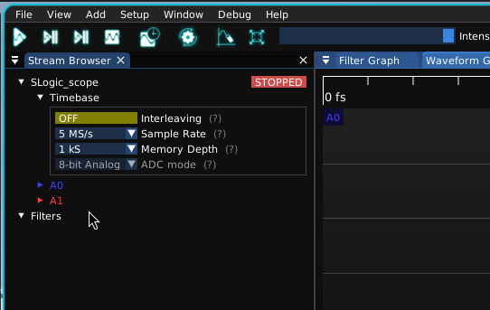
远程使用：bridge 默认监听所有网络接口（
0.0.0.0），把硬件插在树莓派或采集机上跑 bridge，再从你的开发机用<远程IP>:10101连过去即可。注意防火墙要放通 10101（命令）和 10102（数据）两个端口。
用法
数字逻辑分析（默认模式）
每个通道是一路独立的数字电平（高/低），最常用的工作模式。直接 ./sigrok-bridge 启动即可——默认就是数字模式。
基本流程：
- 选通道：在通道面板勾选你要采的通道。
- 设采样率：从下拉里选，例如 200 MS/s。
- 设采样深度：每次采集存多少点。一般 1 MS（即 100 万点）够用。
- 配触发：在 Trigger 面板选触发源通道、上升沿/下降沿/任意沿。
- 运行：
- Run——连续采集，刷新显示
- Single——采一帧后停下来仔细看
- Force——不等待触发的采一帧
📷 数字波形图：对比模拟波形图
触发于 D9 的下降沿
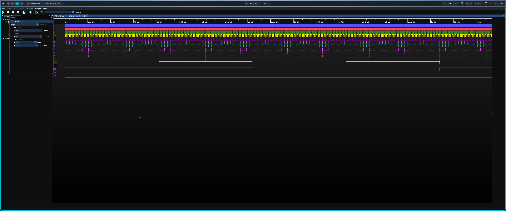
进一步：协议解码
把数字波形拖进 Protocol Analyzer 就能解 UART、I²C、SPI、CAN 等协议——这是 ngscopeclient 比传统 sigrok GUI 强的地方。
📷 SPI解码参考图：数字波形和协议解码结果。
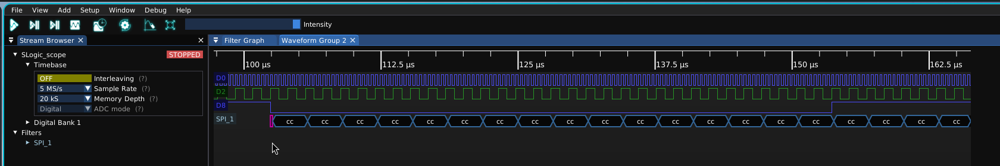
把硬件当采样示波器用（模拟模式 / --adc-mode analog）
这是本项目独有的能力之一：把 SLogic 的并行数字采样当作 ADC 数据流上传，让一台 SLogic 同时兼任逻辑分析仪 + 8-bit 采样示波器。
启动 bridge 时加 --adc-mode analog：
# Linux
./sigrok-bridge --adc-mode analog
# Windows
.\sigrok-bridge.exe --adc-mode analog
效果：原本的 D0–D7 / D8–D15 会被合并成 2 路 8-bit 模拟通道（A0、A1），如还有 D16–D23 / D24–D31 则会被一共合并成 4 路 8-bit 模拟通道（A0、A1、A2、A3），可以直接在 ngscopeclient 里像看模拟示波器一样看波形——量程、坐标轴、自动测量、FFT 等模拟示波器特性都自动可用。
⚠️ ADC 模式当前只能在启动 bridge 时通过
--adc-mode指定，连接后无法在 ngscopeclient 界面里动态切换；要改模式请先关掉 bridge，重新带参启动，然后再重新连接。
📷 模拟波形图：对比数字波形图
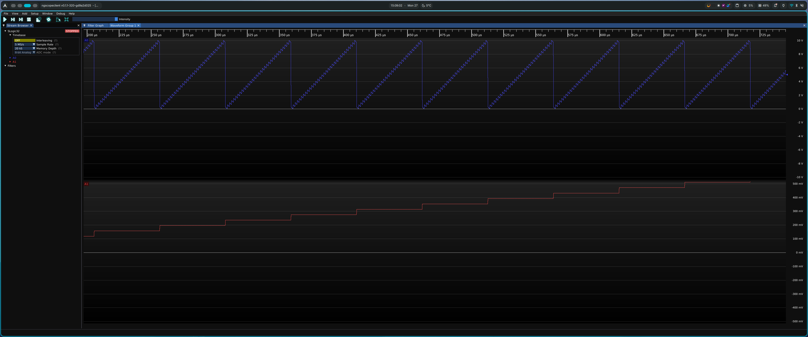
须知
⚠️ 模拟模式需要硬件支持外接 ADC 模块（SLogic16U3 / SLogic32U3），当前触发与量程仍用默认值，仍在打磨中。
常见问题
Linux 下报 "Permission denied" 或 "LIBUSB_ERROR_ACCESS"
USB 权限没配好。回到 §2.2 步骤 2 装 udev 规则，然后拔插一次设备。
ngscopeclient 连上了但通道列表是空的
两种可能：
- bridge 启动时没找到设备——bridge 启动日志里如果出现 No devices found，说明没识别到 SLogic。检查硬件是否插好、设备管理器（Windows）/
lsusb（Linux）能否看到 SLogic。 - 防火墙挡住了数据口（10102）——命令口能通但数据口不通时，连接看起来"成功"但拿不到任何波形。检查防火墙是否同时放通 10101 和 10102。
Windows 双击 sigrok-bridge.exe 一闪而过
正常的命令行程序，但如果是用资源管理器双击启动，启动失败时窗口会闪一下消失。改用 PowerShell 或 cmd 运行：
.\sigrok-bridge.exe
这样能看到错误信息。常见错误是 10101 端口已被占用，换个端口：--port 20101。
采样率 / 采样深度下拉里没东西
bridge 与设备的能力握手失败了。bridge 用的是 Rust 生态通用的 env_logger，发行版二进制同样支持通过 RUST_LOG 环境变量调日志级别（默认 info，调成 debug 会更详细）：
# Linux
RUST_LOG=debug ./sigrok-bridge
Windows 上设置环境变量的语法依 shell 而定：
# PowerShell（推荐）
$env:RUST_LOG="debug"; .\sigrok-bridge.exe
:: cmd.exe
set RUST_LOG=debug
.\sigrok-bridge.exe
把日志通过 §7 邮件渠道发给我们，通常能很快定位问题。
想换其它厂商或型号的逻辑分析仪能用吗
当前分发版本只对 Sipeed SLogic 系列做了适配，其它型号暂未添加，后续会考虑。
反馈
遇到 Bug、想要新功能、或使用上有任何疑问，请发邮件到 support@sipeed.com。
发邮件时请附上：
RUST_LOG=debug跑 bridge 的完整日志- ngscopeclient 版本（菜单 Help → About）
- 硬件型号 + 固件版本
- 操作系统版本（Windows / Linux 发行版）
📷 项目家族合照： SLogic 硬件实物 + ngscopeclient 屏幕画面 + bridge 终端日志，三件套同屏。
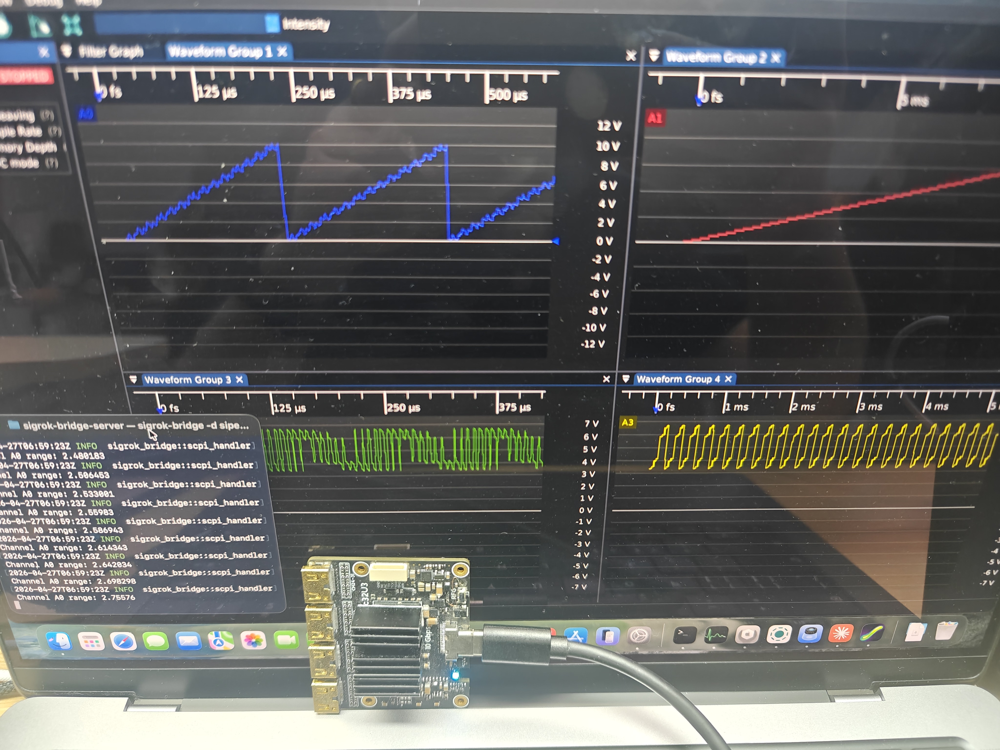